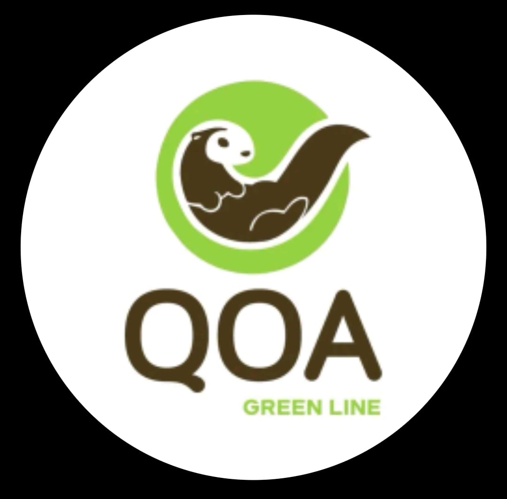

Apoyando a emprendedores y al medio ambiente

Descubre artículos únicos, reciclados y amigables con el medio ambiente.
Ver productosSomos una microempresa dedicada a crear productos ecológicos, apoyando a emprendedores locales y cuidando el planeta.
Reducir el impacto ambiental promoviendo el uso de materiales reciclados y artesanales de nuestra región.